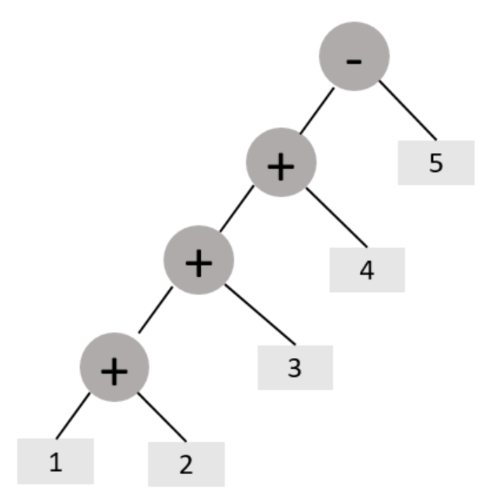

行为型模式 Ⅱ
观察者模式
概述
定义：
又被称为发布-订阅（Publish/Subscribe）模式，它定义了一种一对多的依赖关系，让多个观察者对象同时监听某一个主题对象。这个主题对象在状态变化时，会通知所有的观察者对象，使他们能够自动更新自己。
结构
在观察者模式中有如下角色：
- Subject：抽象主题（抽象被观察者），抽象主题角色把所有观察者对象保存在一个集合里，每个主题都可以有任意数量的观察者，抽象主题提供一个接口，可以增加和删除观察者对象。
- ConcreteSubject：具体主题（具体被观察者），该角色将有关状态存入具体观察者对象，在具体主题的内部状态发生改变时，给所有注册过的观察者发送通知。
- Observer：抽象观察者，是观察者的抽象类，它定义了一个更新接口，使得在得到主题更改通知时更新自己。
- ConcrereObserver：具体观察者，实现抽象观察者定义的更新接口，以便在得到主题更改通知时更新自身的状态。
案例实现
【例】微信公众号
在使用微信公众号时，大家都会有这样的体验，当你关注的公众号中有新内容更新的话，它就会推送给关注公众号的微信用户端。我们使用观察者模式来模拟这样的场景，微信用户就是观察者，微信公众号是被观察者，有多个的微信用户关注了程序猿这个公众号。
类图如下：
classDiagram
class Subject {
<< interface >>
+ attach(Observer observer) void
+ detach(Observer observer) void
+ notify(String message) void
}
class SubscriptionSubject {
- weixinUserlist : List~Observer~
+ attach(Observer observer) void
+ detach(Observer observer) void
+ notify(String message) void
}
class Observer {
<< interface >>
+ update(String message) void
}
class WeixinUser {
- name : String
+ WeixinUser(String name)
+ update(String message) void
}
Subject <|.. SubscriptionSubject
Observer --o SubscriptionSubject
Observer <|.. WeixinUser
抽象观察者类
public interface Observer {
void update(String message);
}抽象主题角色类
public interface Subject {
//添加订阅者(添加观察者对象)
void attach(Observer observer);
//删除订阅者
void detach(Observer observer);
//通知订阅者更新消息
void notify(String message);
}具体主题角色类
public class SubscriptionSubject implements Subject{
//定义一个集合, 用来存储多个观察者对象
private List<Observer> weixinUserList = new ArrayList<>();
@Override
public void attach(Observer observer) {
weixinUserList.add(observer);
}
@Override
public void detach(Observer observer) {
weixinUserList.remove(observer);
}
@Override
public void notify(String message) {
//遍历集合
for (Observer observer : weixinUserList) {
//调用观察者对象中的update方法
observer.update(message);
}
}
}具体观察者角色类
public class WeiXinUser implements Observer{
//微信名
private String name;
public WeiXinUser(String name) {
this.name = name;
}
@Override
public void update(String message) {
System.out.println(name + "-" + message);
}
}测试类
public class Client {
public static void main(String[] args) {
//1.创建公众号对象
Subject subject = new SubscriptionSubject();
//2.订阅公众号
subject.attach(new WeiXinUser("张三"));
subject.attach(new WeiXinUser("李四"));
subject.attach(new WeiXinUser("王五"));
//3.公众号更新, 发出消息给订阅者(观察者对象)
subject.notify("测试消息");
}
}张三-测试消息
李四-测试消息
王五-测试消息优缺点
1，优点：
- 降低了目标与观察者之间的耦合关系，两者之间是抽象耦合关系。
- 被观察者发送通知，所有注册的观察者都会收到信息【可以实现广播机制】
2，缺点：
- 如果观察者非常多的话，那么所有的观察者收到被观察者发送的通知会耗时
- 如果被观察者有循环依赖的话，那么被观察者发送通知会使观察者循环调用，会导致系统崩溃
使用场景
- 对象间存在一对多关系，一个对象的状态发生改变会影响其他对象。
- 当一个抽象模型有两个方面，其中一个方面依赖于另一方面时。
JDK 中提供的实现
在 Java 中，通过 java.util.Observable 类和 java.util.Observer 接口定义了观察者模式，只要实现它们的子类就可以编写观察者模式实例。
1，Observable类
Observable 类是抽象目标类（被观察者），它有一个 Vector 集合成员变量，用于保存所有要通知的观察者对象，下面来介绍它最重要的 3 个方法。
public class Observable {
...
private Vector<Observer> obs;
/** Construct an Observable with zero Observers. */
public Observable() {
obs = new Vector<>();
}
...
}- void addObserver(Observer o) 方法：用于将新的观察者对象添加到集合中。
public synchronized void addObserver(Observer o) {
if (o == null)
throw new NullPointerException();
if (!obs.contains(o)) {
obs.addElement(o);
}
}- void notifyObservers(Object arg) 方法：调用集合中的所有观察者对象的 update方法，通知它们数据发生改变。通常越晚加入集合的观察者越先得到通知。
public void notifyObservers(Object arg) {
/*
* a temporary array buffer, used as a snapshot of the state of
* current Observers.
*/
Object[] arrLocal;
synchronized (this) {
if (!changed)
return;
arrLocal = obs.toArray();
clearChanged(); //标识改为false
}
for (int i = arrLocal.length-1; i>=0; i--)
((Observer)arrLocal[i]).update(this, arg);
}
protected synchronized void setChanged() {
changed = true;
}2，Observer 接口
Observer 接口是抽象观察者，它监视目标对象的变化，当目标对象发生变化时，观察者得到通知，并调用 update 方法，进行相应的工作。
- void setChange() 方法：用来设置一个 boolean 类型的内部标志，注明目标对象发生了变化。当它为 true 时，notifyObservers() 才会通知观察者。
【例】警察抓小偷
警察抓小偷也可以使用观察者模式来实现，警察是观察者，小偷是被观察者。代码如下：
小偷是一个被观察者，所以需要继承 Observable 类
public class Thief extends Observable {
private String name;
public Thief(String name) {
this.name = name;
}
public void setName(String name) {
this.name = name;
}
public String getName() {
return name;
}
public void steal() {
System.out.println("小偷：我偷东西了，有没有人来抓我！！！");
super.setChanged(); //changed = true
super.notifyObservers();
}
}警察是一个观察者，所以需要让其实现 Observer 接口
public class Policemen implements Observer {
private String name;
public Policemen(String name) {
this.name = name;
}
public void setName(String name) {
this.name = name;
}
public String getName() {
return name;
}
@Override
public void update(Observable o, Object arg) {
System.out.println("警察：" + ((Thief) o).getName() + "，我已经盯你很久了，你可以保持沉默，但你所说的将成为呈堂证供！！！");
}
}测试类
public class Client {
public static void main(String[] args) {
//创建小偷对象
Thief t = new Thief("隔壁老王");
//创建警察对象
Policemen p = new Policemen("小李");
//让警察盯着小偷
t.addObserver(p);
//小偷偷东西
t.steal();
}
}中介者模式
概述
一般来说，同事类之间的关系是比较复杂的，多个同事类之间互相关联时，他们之间的关系会呈现为复杂的网状结构，这是一种过度耦合的架构，即不利于类的复用，也不稳定。例如在下左图中，有六个同事类对象，假如对象 1 发生变化，那么将会有 4 个对象受到影响。如果对象 2 发生变化，那么将会有 5 个对象受到影响。也就是说，同事类之间直接关联的设计是不好的。
如果引入中介者模式，那么同事类之间的关系将变为星型结构，从下右图中可以看到，任何一个类的变动，只会影响的类本身，以及中介者，这样就减小了系统的耦合。一个好的设计，必定不会把所有的对象关系处理逻辑封装在本类中，而是使用一个专门的类来管理那些不属于自己的行为。

定义：
又叫调停模式，定义一个中介角色来封装一系列对象之间的交互，使原有对象之间的耦合松散，且可以独立地改变它们之间的交互。
结构
中介者模式包含以下主要角色：
-
抽象中介者（Mediator）角色：它是中介者的接口，提供了同事对象注册与转发同事对象信息的抽象方法。
-
具体中介者（ConcreteMediator）角色：实现中介者接口，定义一个 List 来管理同事对象，协调各个同事角色之间的交互关系，因此它依赖于同事角色。
-
抽象同事类（Colleague）角色：定义同事类的接口，保存中介者对象，提供同事对象交互的抽象方法，实现所有相互影响的同事类的公共功能。
-
具体同事类（Concrete Colleague）角色：是抽象同事类的实现者，当需要与其他同事对象交互时，由中介者对象负责后续的交互。
案例实现
【例】租房
现在租房基本都是通过房屋中介，房主将房屋托管给房屋中介，而租房者从房屋中介获取房屋信息。房屋中介充当租房者与房屋所有者之间的中介者。
类图如下：
classDiagram
class Person {
# name : String
# mediator : Mediator
+ Person(String name, Mediator mediator)
}
class Mediator {
+ constact(String message, Person person) void
}
class Tenant {
+ Tenane(String name, Mediator mediator)
+ constact(String message) void
+ getMessage(String message) void
}
class HouseOwner {
+ HouseOwner(String name, Mediator mediator)
+ constact(String message) void
+ getMessage(String message) void
}
class MediatorStructure {
- hoseOwner : HouseOwner
- tenant : Tenant
+ setHouseOwner(HouseOwner houseOwner) void
+ setTenant(Tenant tenant) void
+ getHouseOwner() HouseOwner
+ getTenane() Tenant
+ constact(String message, Person person) void
}
Person o-- Mediator
Person <|-- Tenant
Person <|-- HouseOwner
Mediator <|-- MediatorStructure
Tenant --o MediatorStructure
HouseOwner --o MediatorStructure
抽象中介者类
public abstract class Mediator {
public abstract void constact(String message, Person person);
}抽象同事类
public abstract class Person {
//租房者姓名
protected String name;
//中介
protected Mediator mediator;
public Person(String name, Mediator mediator) {
this.name = name;
this.mediator = mediator;
}
}具体同事类角色
//租房者
public class Tenant extends Person {
public Tenant(String name, Mediator mediator) {
super(name, mediator);
}
//和中介联系(沟通)
public void constact(String message) {
mediator.constact(message, this);
}
//获取信息
public void getMessage(String message) {
System.out.println("租房者" + name + "获取到的信息是: " + message);
}
}具体的同事角色类角色
//房主
public class HouseOwner extends Person{
public HouseOwner(String name, Mediator mediator) {
super(name, mediator);
}
//和中介联系(沟通)
public void constact(String message) {
mediator.constact(message, this);
}
//获取信息
public void getMessage(String message) {
System.out.println("房主" + name + "获取到的信息是: " + message);
}
}具体中介者角色类
public class MediatorStructure extends Mediator{
//聚合房主和租房者对象
private HouseOwner houseOwner; //房主
private Tenant tenant; //租客
public void constact(String message, Person person) {
if (person == houseOwner) {
tenant.getMessage(message);
} else {
houseOwner.getMessage(message);
}
}
public HouseOwner getHouseOwner() {
return houseOwner;
}
public void setHouseOwner(HouseOwner houseOwner) {
this.houseOwner = houseOwner;
}
public Tenant getTenant() {
return tenant;
}
public void setTenant(Tenant tenant) {
this.tenant = tenant;
}
}测试类
public class Client {
public static void main(String[] args) {
//创建中介者对象
MediatorStructure mediator = new MediatorStructure();
//创建租房者对象
Tenant tenant = new Tenant("李四", mediator);
//创建房主对象
HouseOwner houseOwner = new HouseOwner("张三", mediator);
//中介者要知道具体的房主和租房者
mediator.setTenant(tenant);
mediator.setHouseOwner(houseOwner);
tenant.constact("我要租三室的房子");
houseOwner.constact("我这里有三室的房子");
}
}房主张三获取到的信息是: 我要租三室的房子
租房者李四获取到的信息是: 我这里有三室的房子优缺点
1，优点：
-
松散耦合
中介者模式通过把多个同事对象之间的交互封装到中介者对象里面，从而使得同事对象之间松散耦合，基本上可以做到互补依赖。这样一来，同事对象就可以独立地变化和复用，而不再像以前那样“牵一处而动全身”了。
-
集中控制交互
多个同事对象的交互，被封装在中介者对象里面集中管理，使得这些交互行为发生变化的时候，只需要修改中介者对象就可以了，当然如果是已经做好的系统，那么就扩展中介者对象，而各个同事类不需要做修改。
-
一对多关联转变为一对一的关联
没有使用中介者模式的时候，同事对象之间的关系通常是一对多的，引入中介者对象以后，中介者对象和同事对象的关系通常变成双向的一对一，这会让对象的关系更容易理解和实现。
2，缺点：
当同事类太多时，中介者的职责将很大，它会变得复杂而庞大，以至于系统难以维护。
使用场景
- 系统中对象之间存在复杂的引用关系，系统结构混乱且难以理解。
- 当想创建一个运行于多个类之间的对象，又不想生成新的子类时。
迭代器模式
概述
定义：
提供一个对象来顺序访问聚合对象中的一系列数据，而不暴露聚合对象的内部表示。
结构
迭代器模式主要包含以下角色：
-
抽象聚合（Aggregate）角色：定义存储、添加、删除聚合元素以及创建迭代器对象的接口。
-
具体聚合（ConcreteAggregate）角色：实现抽象聚合类，返回一个具体迭代器的实例。
-
抽象迭代器（Iterator）角色：定义访问和遍历聚合元素的接口，通常包含 hasNext()、next() 等方法。
-
具体迭代器（Concretelterator）角色：实现抽象迭代器接口中所定义的方法，完成对聚合对象的遍历，记录遍历的当前位置。
案例实现
【例】定义一个可以存储学生对象的容器对象，将遍历该容器的功能交由迭代器实现，涉及到的类如下：
classDiagram
class StudentIterator {
<< interface >>
+ hasNext() boolean
+ next() Student
}
class StudentIteratorImpl {
- list : List~Student~
- position : int
+ StudentIteratorImpl(List~Student~ list)
+ hasNext() boolean
+ next() Student
}
class StudentAggregate {
<< interface >>
+ addStudent(Student student) void
+ removeStudent(Student student) void
+ getStudentIterator() StudentIterator
}
class StudentAggregateImpl {
- list : List~Student~
+ addStudent(Student student) void
+ removeStudent(Student student) void
+ getStudentIterator() StudentIterator
}
class Student {
- name : String
- number : String
+ setName(String name) void
+ setNumber(String number) void
+ getName() String
+ getNumber() String
+ toString() String
}
StudentIterator <|.. StudentIteratorImpl
StudentIterator <.. StudentAggregate
StudentIterator <.. StudentAggregateImpl
StudentAggregate <|.. StudentAggregateImpl
StudentIteratorImpl o-- Student
StudentAggregateImpl o-- Student
学生类
public class Student {
private String name;
private String number;
public String getName() {
return name;
}
public void setName(String name) {
this.name = name;
}
public String getNumber() {
return number;
}
public void setNumber(String number) {
this.number = number;
}
public Student(String name, String number) {
this.name = name;
this.number = number;
}
public Student() {
}
@Override
public String toString() {
return "Student{" +
"name='" + name + '\'' +
", number='" + number + '\'' +
'}';
}
}抽象迭代器
public interface StudentIterator {
//判断是否还有元素
boolean hasNext();
//获取下一个元素
Student next();
}
具体迭代器
public class StudentIteratorImpl implements StudentIterator {
//集合
private List<Student> list;
private int posittion = 0; //用来记录遍历时的位置
public StudentIteratorImpl(List<Student> list) {
this.list = list;
}
@Override
public boolean hasNext() {
return posittion < list.size();
}
@Override
public Student next() {
//从集合中获取指定位置的元素
Student currentStudent = list.get(posittion);
posittion++;
return currentStudent;
}
}抽象容器类
public interface StudentAggregate {
//添加学生功能
void addStudent(Student stu);
//删除学生功能
void removeStudent(Student stu);
//获取迭代器对象功能
StudentIterator getStudentIterator();
}具体容器类
public class StudentAggregateImpl implements StudentAggregate {
private List<Student> list = new ArrayList<>();
@Override
public void addStudent(Student stu) {
list.add(stu);
}
@Override
public void removeStudent(Student stu) {
list.remove(stu);
}
//获取迭代器对象
@Override
public StudentIterator getStudentIterator() {
return new StudentIteratorImpl(list);
}
}测试类
public class Client {
public static void main(String[] args) {
//创建聚合对象
StudentAggregateImpl aggregate = new StudentAggregateImpl();
//添加元素
aggregate.addStudent(new Student("张三", "180001"));
aggregate.addStudent(new Student("李四", "180002"));
aggregate.addStudent(new Student("王五", "180003"));
aggregate.addStudent(new Student("赵六", "180004"));
//遍历聚合对象
//1.获取迭代器对象
StudentIterator iterator = aggregate.getStudentIterator();
//2.遍历
while (iterator.hasNext()) {
//3.获取元素
Student student = iterator.next();
System.out.println(student.toString());
}
}
}Student{name='张三', number='180001'}
Student{name='李四', number='180002'}
Student{name='王五', number='180003'}
Student{name='赵六', number='180004'}优缺点
1，优点：
- 它支持以不同的方式遍历一个聚合对象，在同一个聚合对象上可以定义多种遍历方式。在迭代器模式中只需要用一个不同的迭代器来替换原有迭代器即可改变遍历算法，我们也可以自己定义迭代器的子类以支持新的遍历方式。
- 迭代器简化了聚合类。由于引入了迭代器，在原有的聚合对象中不需要再自行提供数据遍历等方法，这样可以简化聚合类的设计。
- 在迭代器模式中，由于引入了抽象层，增加新的聚合类和迭代器类都很方便，无须修改原有代码，满足 “开闭原则” 的要求。
2，缺点：
增加了类的个数，这在一定程度上增加了系统的复杂性。
使用场景
- 当需要为聚合对象提供多种遍历方式时。
- 当需要为遍历不同的聚合结构提供一个统一的接口时。
- 当访问一个聚合对象的内容而无须暴露其内部细节的表示时。
JDK源码解析
迭代器模式在 Java 的很多集合类中被广泛应用，接下来看看 Java 源码中是如何使用迭代器模式的。
List<String> list = new ArrayList<>();
Iterator<String> iterator = list.iterator(); //list.iterator()方法返回的肯定是Iterator接口的子实现类对象
while (iterator.hasNext()) {
System.out.println(iterator.next());
}看完这段代码是不是很熟悉，与我们上面代码基本类似。单列集合都使用到了迭代器，我们以 ArrayList 举例来说明
- List：抽象聚合类
- ArrayList：具体的聚合类
- Iterator：抽象迭代器
- list.iterator()：返回的是实现了
Iterator接口的具体迭代器对象
具体的来看看 ArrayList 的代码实现
public class ArrayList<E> extends AbstractList<E>
implements List<E>, RandomAccess, Cloneable, java.io.Serializable {
public Iterator<E> iterator() {
return new Itr();
}
//私有内部类, 迭代器类
private class Itr implements Iterator<E> {
int cursor; // 下一个要返回元素的索引
int lastRet = -1; // 上一个返回元素的索引
int expectedModCount = modCount;
Itr() {}
//判断是否还有元素
public boolean hasNext() {
return cursor != size;
}
//获取下一个元素
public E next() {
checkForComodification();
int i = cursor;
if (i >= size)
throw new NoSuchElementException();
Object[] elementData = ArrayList.this.elementData;
if (i >= elementData.length)
throw new ConcurrentModificationException();
cursor = i + 1;
return (E) elementData[lastRet = i];
}
...
}这部分代码还是比较简单，大致就是在 iterator 方法中返回了一个实例化的 Iterator 对象。Itr是一个内部类，它实现了 Iterator 接口并重写了其中的抽象方法。
注意：
当我们在使用 Java 开发的时候，想使用迭代器模式的话，只要让我们自己定义的容器类实现
java.util.Iterable并实现其中的 iterator() 方法使其返回一个java.util.Iterator的实现类就可以了。
访问者模式
概述
定义：
封装一些作用于某种数据结构中的各元素的操作，它可以在不改变这个数据结构的前提下定义作用于这些元素的新的操作。
结构
访问者模式包含以下主要角色:
- 抽象访问者（Visitor）角色：定义了对每一个元素
（Element）访问的行为，它的参数就是可以访问的元素，它的方法个数理论上来讲与元素类个数（Element 的实现类个数）是一样的，从这点不难看出，访问者模式要求元素类的个数不能改变。 - 具体访问者（ConcreteVisitor）角色：给出对每一个元素类访问时所产生的具体行为。
- 抽象元素（Element）角色：定义了一个接受访问者的方法（
accept），其意义是指，每一个元素都要可以被访问者访问。 - 具体元素（ConcreteElement）角色： 提供接受访问方法的具体实现，而这个具体的实现，通常情况下是使用访问者提供的访问该元素类的方法。
- 对象结构（Object Structure）角色：定义当中所提到的对象结构，对象结构是一个抽象表述，具体点可以理解为一个具有容器性质或者复合对象特性的类，它会含有一组元素（
Element），并且可以迭代这些元素，供访问者访问。
案例实现
【例】给宠物喂食
现在养宠物的人特别多，我们就以这个为例，当然宠物还分为狗，猫等，要给宠物喂食的话，主人可以喂，其他人也可以喂食。
- 访问者角色：给宠物喂食的人
- 具体访问者角色：主人、其他人
- 抽象元素角色：动物抽象类
- 具体元素角色：宠物狗、宠物猫
- 结构对象角色：主人家
类图如下：
classDiagram
class Animal {
<< interface >>
+ accept(Person person) void
}
class Home {
- nodeList : List~Animal~
}
class Person {
<< interface >>
+ feed(Cat cat) void
+ feed(Dog dog) void
}
class Dog {
+ accept(Person person) void
}
class Cat {
+ accept(Person person) void
}
class Owner {
+ feed(Cat cat) void
+ feed(Dog dog) void
}
class Someone {
+ feed(Cat cat) void
+ feed(Dog dog) void
}
Home o-- Animal
Animal <|.. Dog
Animal <|.. Cat
Person <|.. Owner
Person <|.. Someone
抽象访问者接口
public interface Person {
void feed(Cat cat);
void feed(Dog dog);
}具体访问者角色(主人和其他人), 都需要实现 Person 接口
public class Owner implements Person {
@Override
public void feed(Cat cat) {
System.out.println("主人喂食猫");
}
@Override
public void feed(Dog dog) {
System.out.println("主人喂食狗");
}
}
public class Someone implements Person {
@Override
public void feed(Cat cat) {
System.out.println("其他人喂食猫");
}
@Override
public void feed(Dog dog) {
System.out.println("其他人喂食狗");
}
}抽象节点 – 宠物
public interface Animal {
void accept(Person person);
}具体节点(元素)
public class Dog implements Animal {
@Override
public void accept(Person person) {
person.feed(this);
System.out.println("好好吃，汪汪汪！！！");
}
}
public class Cat implements Animal {
@Override
public void accept(Person person) {
person.feed(this);
System.out.println("好好吃，喵喵喵！！！");
}
}对象结构(主人家)
public class Home {
private List<Animal> nodeList = new ArrayList<Animal>();
public void action(Person person) {
for (Animal node : nodeList) {
node.accept(person);
}
}
//添加操作
public void add(Animal animal) {
nodeList.add(animal);
}
}
测试类
public class Client {
public static void main(String[] args) {
Home home = new Home();
home.add(new Dog());
home.add(new Cat());
Owner owner = new Owner();
home.action(owner);
Someone someone = new Someone();
home.action(someone);
}
}优缺点
1，优点：
-
扩展性好
在不修改对象结构中的元素的情况下，为对象结构中的元素添加新的功能。
-
复用性好
通过访问者来定义整个对象结构通用的功能，从而提高复用程度。
-
分离无关行为
通过访问者来分离无关的行为，把相关的行为封装在一起，构成一个访问者，这样每一个访问者的功能都比较单一。
2，缺点：
-
对象结构变化很困难
在访问者模式中，每增加一个新的元素类，都要在每一个具体访问者类中增加相应的具体操作，这违背了“开闭原则”。
-
违反了依赖倒置原则
访问者模式依赖了具体类，而没有依赖抽象类。
使用场景
-
对象结构相对稳定，但其操作算法经常变化的程序。
-
对象结构中的对象需要提供多种不同且不相关的操作，而且要避免让这些操作的变化影响对象的结构。
拓展
访问者模式用到了一种双分派的技术。
1，分派：
变量被声明时的类型叫做变量的静态类型，有些人又把静态类型叫做明显类型；而变量所引用的对象的真实类型又叫做变量的实际类型。比如 Map map = new HashMap() ，map 变量的静态类型是 Map ，实际类型是 HashMap 。根据对象的类型而对方法进行的选择，就是分派(Dispatch)，分派(Dispatch)又分为两种，即静态分派和动态分派。
静态分派(Static Dispatch) 发生在编译时期，分派根据静态类型信息发生。静态分派对于我们来说并不陌生，方法重载就是静态分派。
动态分派(Dynamic Dispatch) 发生在运行时期，动态分派动态地置换掉某个方法。Java 通过方法的重写支持动态分派。
2，动态分派：
通过方法的重写支持动态分派。
public class Animal {
public void execute() {
System.out.println("Animal");
}
}
public class Dog extends Animal {
@Override
public void execute() {
System.out.println("dog");
}
}
public class Cat extends Animal {
@Override
public void execute() {
System.out.println("cat");
}
}
public class Client {
public static void main(String[] args) {
Animal a = new Dog();
a.execute();
Animal a1 = new Cat();
a1.execute();
}
}上面代码的结果大家应该直接可以说出来，这不就是多态吗！运行执行的是子类中的方法。
Java 编译器在编译时期并不总是知道哪些代码会被执行，因为编译器仅仅知道对象的静态类型，而不知道对象的真实类型；而方法的调用则是根据对象的真实类型，而不是静态类型。
3，静态分派：
通过方法重载支持静态分派。
public class Animal {
}
public class Dog extends Animal {
}
public class Cat extends Animal {
}
public class Execute {
public void execute(Animal a) {
System.out.println("Animal");
}
public void execute(Dog d) {
System.out.println("dog");
}
public void execute(Cat c) {
System.out.println("cat");
}
}
public class Client {
public static void main(String[] args) {
Animal a = new Animal();
Animal a1 = new Dog();
Animal a2 = new Cat();
Execute exe = new Execute();
exe.execute(a);
exe.execute(a1);
exe.execute(a2);
}
}运行结果：
animal
animal
animal这个结果可能出乎一些人的意料了，为什么呢？
重载方法的分派是根据静态类型进行的，这个分派过程在编译时期就完成了。
4，双分派：
所谓双分派技术就是在选择一个方法的时候，不仅仅要根据消息接收者（receiver）的运行时区别，还要根据参数的运行时区别。
public class Animal {
public void accept(Execute exe) {
exe.execute(this);
}
}
public class Dog extends Animal {
public void accept(Execute exe) {
exe.execute(this);
}
}
public class Cat extends Animal {
public void accept(Execute exe) {
exe.execute(this);
}
}
public class Execute {
public void execute(Animal a) {
System.out.println("animal");
}
public void execute(Dog d) {
System.out.println("dog");
}
public void execute(Cat c) {
System.out.println("cat");
}
}
public class Client {
public static void main(String[] args) {
Animal a = new Animal();
Animal d = new Dog();
Animal c = new Cat();
Execute exe = new Execute();
a.accept(exe);
d.accept(exe);
c.accept(exe);
}
}在上面代码中，客户端将 Execute 对象做为参数传递给 Animal 类型的变量调用的方法，这里完成第一次分派，这里是方法重写，所以是动态分派，也就是执行实际类型中的方法，同时也 将自己 this 作为参数传递进去，这里就完成了第二次分派，这里的 Execute 类中有多个重载的方法，而传递进行的是 this，就是具体的实际类型的对象。
说到这里，我们已经明白双分派是怎么回事了，但是它有什么效果呢？就是可以实现方法的动态绑定，我们可以对上面的程序进行修改。
运行结果如下：
animal
dog
cat双分派实现动态绑定的本质，就是在重载方法委派的前面加上了继承体系中覆盖的环节，由于覆盖是动态的，所以重载就是动态的了。
备忘录模式
概述
备忘录模式提供了一种状态恢复的实现机制，使得用户可以方便地回到一个特定的历史步骤，当新的状态无效或者存在问题时，可以使用暂时存储起来的备忘录将状态复原，很多软件都提供了撤销（Undo）操作，如 Word、记事本、Photoshop、IDEA 等软件在编辑时按 Ctrl+Z 组合键时能撤销当前操作，使文档恢复到之前的状态；还有在 浏览器 中的后退键、数据库事务管理中的回滚操作、玩游戏时的中间结果存档功能、数据库与操作系统的备份操作、棋类游戏中的悔棋功能等都属于这类。
定义：
又叫快照模式，在不破坏封装性的前提下，捕获一个对象的内部状态，并在该对象之外保存这个状态，以便以后当需要时能将该对象恢复到原先保存的状态。
结构
备忘录模式的主要角色如下：
- 发起人（Originator）角色：记录当前时刻的内部状态信息，提供创建备忘录和恢复备忘录数据的功能，实现其他业务功能，它可以访问备忘录里的所有信息。
- 备忘录（Memento）角色：负责存储发起人的内部状态，在需要的时候提供这些内部状态给发起人。
- 管理者（Caretaker）角色：对备忘录进行管理，提供保存与获取备忘录的功能，但其不能对备忘录的内容进行访问与修改。
备忘录有两个等效的接口：
- 窄接口：管理者(Caretaker)对象（和其他发起人对象之外的任何对象）看到的是备忘录的窄接口(narror Interface)，这个窄接口只允许他把备忘录对象传给其他的对象。
- 宽接口：与管理者看到的窄接口相反，发起人对象可以看到一个宽接口(wide Interface)，这个宽接口允许它读取所有的数据，以便根据这些数据恢复这个发起人对象的内部状态。
案例实现
【例】游戏挑战 BOSS
游戏中的某个场景，一游戏角色有生命力、攻击力、防御力等数据，在打Boss 前和后一定会不一样的，我们允许玩家如果感觉与 Boss 决斗的效果不理想可以让游戏恢复到决斗之前的状态。
要实现上述案例，有两种方式：
- “白箱”备忘录模式
- “黑箱”备忘录模式
“白箱”备忘录模式
备忘录角色对任何对象都提供一个接口，即宽接口，备忘录角色的内部所存储的状态就对所有对象公开。类图如下：
classDiagram
class RoleStateMemento {
- vit : int
- atk : int
- def : int
+ RoleStateMemento(int vit, int atk, int def)
}
class GameRole {
- vit : int
- atk : int
- def : int
+ initState() void
+ fight() void
+ saveState() RoleStateMemento
+ recoverState(RoleStateMemento roleStateMemento) void
}
class RoleStateCaretaker {
- roleStateMemento RoleStateMemento
+ getRoleStateMemento() RoleStateMemento
+ setRoleStateMemento(RoleStateMemento roleStateMemento) void
}
RoleStateMemento <.. GameRole
RoleStateMemento --o RoleStateCaretaker
发起人角色
//游戏角色类(属于发起人角色)
public class GameRole {
private int vit; //生命力
private int atk; //攻击力
private int def; //防御力
//初始化内部状态的功能
public void initState() {
this.vit = 100;
this.atk = 100;
this.def = 100;
}
//战斗
public void fight() {
this.vit = 0;
this.atk = 0;
this.def = 0;
}
//保存角色状态功能
public RoleStateMemento saveState() {
return new RoleStateMemento(vit, atk, def);
}
//恢复角色状态
public void recoverState(RoleStateMemento roleStateMemento) {
//将备忘录对象中存储的状态赋值给当前对象的成员
this.vit = roleStateMemento.getVit();
this.atk = roleStateMemento.getAtk();
this.def = roleStateMemento.getDef();
}
//展示状态功能
public void stateDisplay() {
System.out.println("角色生命力: " + vit);
System.out.println("角色攻击力: " + atk);
System.out.println("角色防御力: " + def);
}
public int getVit() {
return vit;
}
public void setVit(int vit) {
this.vit = vit;
}
public int getAtk() {
return atk;
}
public void setAtk(int atk) {
this.atk = atk;
}
public int getDef() {
return def;
}
public void setDef(int def) {
this.def = def;
}
}
备忘录角色类
public class RoleStateMemento {
private int vit; //生命力
private int atk; //攻击力
private int def; //防御力
public RoleStateMemento(int vit, int atk, int def) {
this.vit = vit;
this.atk = atk;
this.def = def;
}
public RoleStateMemento() {
}
public int getVit() {
return vit;
}
public void setVit(int vit) {
this.vit = vit;
}
public int getAtk() {
return atk;
}
public void setAtk(int atk) {
this.atk = atk;
}
public int getDef() {
return def;
}
public void setDef(int def) {
this.def = def;
}
}备忘录对象管理类
public class RoleStateCaretaker {
//声明 RoleStateMemento 类型的变量
private RoleStateMemento roleStateMemento;
public RoleStateMemento getRoleStateMemento() {
return roleStateMemento;
}
public void setRoleStateMemento(RoleStateMemento roleStateMemento) {
this.roleStateMemento = roleStateMemento;
}
}测试类
public class Client {
public static void main(String[] args) {
System.out.println("----大战boss前----");
GameRole gameRole = new GameRole();
gameRole.initState(); //初始状态操作
gameRole.stateDisplay();
//将该游戏角色内部状态进行备份
//创建管理者对象
RoleStateCaretaker roleStateCaretaker = new RoleStateCaretaker();
roleStateCaretaker.setRoleStateMemento(gameRole.saveState());
System.out.println("----大战boss后----");
gameRole.fight();
gameRole.stateDisplay();
System.out.println("----恢复之前状态----");
gameRole.recoverState(roleStateCaretaker.getRoleStateMemento());
gameRole.stateDisplay();
}
}
----大战boss前----
角色生命力: 100
角色攻击力: 100
角色防御力: 100
----大战boss后----
角色生命力: 0
角色攻击力: 0
角色防御力: 0
----恢复之前状态----
角色生命力: 100
角色攻击力: 100
角色防御力: 100分析：白箱备忘录模式是破坏封装性的。但是通过程序员自律，同样可以在一定程度上实现模式的大部分用意。
“黑箱”备忘录模式
备忘录角色对发起人对象提供一个宽接口，而为其他对象提供一个窄接口。在 Java 语言中，实现双重接口的办法就是将备忘录类设计成发起人类的内部成员类。
将 RoleStateMemento 设为 GameRole 的内部类，从而将 RoleStateMemento 对象封装在 GameRole 里面；在外面提供一个标识接口 Memento 给 RoleStateCaretaker 及其他对象使用。这样 GameRole 类看到的是 RoleStateMemento 所有的接口，而 RoleStateCaretaker 及其他对象看到的仅仅是标识接口 Memento 所暴露出来的接口，从而维护了封装型。类图如下：
classDiagram
class GameRole {
- vit : int
- atk : int
- def : int
+ initState() void
+ fight() void
+ saveState() Memento
+ recoverState(Memento memento) void
}
class RoleStateCaretaker {
- memento Memento
+ getMemento() Memento
+ setMemento(Memento memento) void
}
class Memento {
<< interafce >>
}
class GameRoel_RoleStateMemento {
- vit : int
- atk : int
- def : int
+ RoleStateMemento(int vit, int atk, int def)
}
GameRole <.. Memento
RoleStateCaretaker o-- Memento
Memento <|.. RoleStateMemento
代码如下：
窄接口 Memento，这是一个标识接口，因此没有定义出任何的方法
public interface Memento {
}定义发起人类 GameRole，并在内部定义备忘录内部类 RoleStateMemento（该内部类设置为私有的）
/游戏角色类
public class GameRole {
private int vit; //生命力
private int atk; //攻击力
private int def; //防御力
//初始化状态
public void initState() {
this.vit = 100;
this.atk = 100;
this.def = 100;
}
//战斗
public void fight() {
this.vit = 0;
this.atk = 0;
this.def = 0;
}
//保存角色状态
public Memento saveState() {
return new RoleStateMemento(vit, atk, def);
}
//回复角色状态
public void recoverState(Memento memento) {
RoleStateMemento roleStateMemento = (RoleStateMemento) memento;
this.vit = roleStateMemento.getVit();
this.atk = roleStateMemento.getAtk();
this.def = roleStateMemento.getDef();
}
public void stateDisplay() {
System.out.println("角色生命力：" + vit);
System.out.println("角色攻击力：" + atk);
System.out.println("角色防御力：" + def);
}
public int getVit() {
return vit;
}
public void setVit(int vit) {
this.vit = vit;
}
public int getAtk() {
return atk;
}
public void setAtk(int atk) {
this.atk = atk;
}
public int getDef() {
return def;
}
public void setDef(int def) {
this.def = def;
}
private class RoleStateMemento implements Memento {
private int vit;
private int atk;
private int def;
public RoleStateMemento(int vit, int atk, int def) {
this.vit = vit;
this.atk = atk;
this.def = def;
}
public int getVit() {
return vit;
}
public void setVit(int vit) {
this.vit = vit;
}
public int getAtk() {
return atk;
}
public void setAtk(int atk) {
this.atk = atk;
}
public int getDef() {
return def;
}
public void setDef(int def) {
this.def = def;
}
}
}负责人角色类 RoleStateCaretaker 能够得到的备忘录对象是以 Memento 为接口的，由于这个接口仅仅是一个标识接口，因此负责人角色不可能改变这个备忘录对象的内容
//角色状态管理者类
public class RoleStateCaretaker {
private Memento memento;
public Memento getMemento() {
return memento;
}
public void setMemento(Memento memento) {
this.memento = memento;
}
}客户端测试类
public class Client {
public static void main(String[] args) {
System.out.println("------------大战Boss前------------");
//大战Boss前
GameRole gameRole = new GameRole();
gameRole.initState();
gameRole.stateDisplay();
//保存进度
RoleStateCaretaker roleStateCaretaker = new RoleStateCaretaker();
roleStateCaretaker.setMemento(gameRole.saveState());
System.out.println("------------大战Boss后------------");
//大战Boss时，损耗严重
gameRole.fight();
gameRole.stateDisplay();
System.out.println("------------恢复之前状态------------");
//恢复之前状态
gameRole.recoverState(roleStateCaretaker.getMemento());
gameRole.stateDisplay();
}
}
优缺点
1，优点：
- 提供了一种可以恢复状态的机制。当用户需要时能够比较方便地将数据恢复到某个历史的状态。
- 实现了内部状态的封装。除了创建它的发起人之外，其他对象都不能够访问这些状态信息。
- 简化了发起人类。发起人不需要管理和保存其内部状态的各个备份，所有状态信息都保存在备忘录中，并由管理者进行管理，这符合单一职责原则。
2，缺点：
- 资源消耗大。如果要保存的内部状态信息过多或者特别频繁，将会占用比较大的内存资源。
使用场景
-
需要保存与恢复数据的场景，如玩游戏时的中间结果的存档功能。
-
需要提供一个可回滚操作的场景，如 Word、记事本、Photoshop，idea等软件在编辑时按 Ctrl+Z 组合键，还有数据库中事务操作。
解释器模式
概述
1 + 2 + 3 + 4 - 5 = ?设计一个软件用来进行加减计算。我们第一想法就是使用工具类，提供对应的加法和减法的工具方法。
//用于两个整数相加
public static int add(int a,int b){
return a + b;
}
//用于两个整数相加
public static int add(int a,int b,int c){
return a + b + c;
}
//用于n个整数相加
public static int add(Integer ... arr) {
int sum = 0;
for (Integer i : arr) {
sum += i;
}
return sum;
}上面的形式比较单一、有限，如果形式变化非常多，这就不符合要求，因为加法和减法运算，两个运算符与数值可以有无限种组合方式。比如 1+2+3+4+5、1+2+3-4 等等。
显然，现在需要一种翻译识别机器，能够解析由数字以及 + - 符号构成的合法的运算序列。如果把运算符和数字都看作节点的话，能够逐个节点的进行读取解析运算，这就是解释器模式的思维。
定义：
给定一个语言，定义它的文法表示，并定义一个解释器，这个解释器使用该标识来解释语言中的句子。
在解释器模式中，我们需要将待解决的问题，提取出规则，抽象为一种“语言”。比如加减法运算，规则为：由数值和±符号组成的合法序列，“1+3-2” 就是这种语言的句子。
解释器就是要解析出来语句的含义。但是如何描述规则呢？
文法（语法）规则：
文法是用于描述语言的语法结构的形式规则。
expression ::= value | plus | minus
plus ::= expression ‘+’ expression
minus ::= expression ‘-’ expression
value ::= integer注意： 这里的符号 “::=” 表示 “定义为” 的意思，竖线 | 表示或，左右的其中一个，引号内为字符本身，引号外为语法。
上面规则描述为 ：
表达式可以是一个值，也可以是 plus 或者 minus 运算，而 plus 和 minus 又是由表达式结合运算符构成，值的类型为整型数。
抽象语法树：
在计算机科学中，抽象语法树（AbstractSyntaxTree，AST），或简称语法树（Syntax tree），是源代码语法结构的一种抽象表示。它以树状的形式表现编程语言的语法结构，树上的每个节点都表示源代码中的一种结构。
用树形来表示符合文法规则的句子。

结构
解释器模式包含以下主要角色。
-
抽象表达式（Abstract Expression）角色：定义解释器的接口，约定解释器的解释操作，主要包含解释方法 interpret()。
-
终结符表达式（Terminal Expression）角色：是抽象表达式的子类，用来实现文法中与终结符相关的操作，文法中的每一个终结符都有一个具体终结表达式与之相对应。
-
非终结符表达式（Nonterminal Expression）角色：也是抽象表达式的子类，用来实现文法中与非终结符相关的操作，文法中的每条规则都对应于一个非终结符表达式。
-
环境（Context）角色：通常包含各个解释器需要的数据或是公共的功能，一般用来传递被所有解释器共享的数据，后面的解释器可以从这里获取这些值。
-
客户端（Client）：主要任务是将需要分析的句子或表达式转换成使用解释器对象描述的抽象语法树，然后调用解释器的解释方法，当然也可以通过环境角色间接访问解释器的解释方法。
案例实现
classDiagram
class Context {
- map : Map~Varlable, Integer~
+ assign(Variable var, Integer value) void
+ getValue(Variable var) int
}
class Variable {
- name : String
+ Variable(String name)
+ interpret(Context context) void
+ toString() String
}
class AbstractExpression {
+ interpret(Context context) void
}
class Value {
- value : int
+ Value(int value)
+ interpret(Context context) void
+ toString() String
}
class Plus {
- left : AbstractExpression
- rigth : AbstractExpression
+ Plus(AbstractExpression left, AbstractExpression right)
+ interpret(Context context) void
+ toString() String
}
class Minus {
- left : AbstractExpression
- rigth : AbstractExpression
+ Minus(AbstractExpression left, AbstractExpression right)
+ interpret(Context context) void
+ toString() String
}
Context o-- Variable
Context <.. Variable
AbstractExpression <|-- Variable
AbstractExpression <|-- Plus
AbstractExpression --o Plus
AbstractExpression <|-- Minus
AbstractExpression --o Minus
AbstractExpression <|-- Value
优缺点
1，优点：
-
易于改变和扩展文法。
由于在解释器模式中使用类来表示语言的文法规则，因此可以通过继承等机制来改变或扩展文法。每一条文法规则都可以表示为一个类，因此可以方便地实现一个简单的语言。
-
实现文法较为容易。
在抽象语法树中每一个表达式节点类的实现方式都是相似的，这些类的代码编写都不会特别复杂。
-
增加新的解释表达式较为方便。
如果用户需要增加新的解释表达式只需要对应增加一个新的终结符表达式或非终结符表达式类，原有表达式类代码无须修改，符合 “开闭原则”。
2，缺点：
-
对于复杂文法难以维护。
在解释器模式中，每一条规则至少需要定义一个类，因此如果一个语言包含太多文法规则，类的个数将会急剧增加，导致系统难以管理和维护。
-
执行效率较低。
由于在解释器模式中使用了大量的循环和递归调用，因此在解释较为复杂的句子时其速度很慢，而且代码的调试过程也比较麻烦。
使用场景
-
当语言的文法较为简单，且执行效率不是关键问题时。
-
当问题重复出现，且可以用一种简单的语言来进行表达时。
-
当一个语言需要解释执行，并且语言中的句子可以表示为一个抽象语法树的时候。